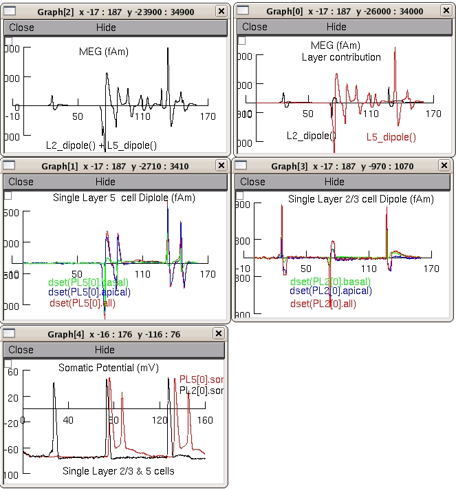

Neural correlates of tactile detection: a combined magnetoencephalography and biophysically based computational modeling study. Jones SR, Pritchett DL, Stufflebeam SM, Hamalainen M, Moore CI. J Neurosci. 2007 Oct 3;27(40):10751-64. Previous reports conflict as to the role of primary somatosensory neocortex (SI) in tactile detection. We addressed this question in normal human subjects using whole-head magnetoencephalography (MEG) recording. We found that the evoked signal (0-175 ms) showed a prominent equivalent current dipole that localized to the anterior bank of the postcentral gyrus, area 3b of SI. The magnitude and timing of peaks in the SI waveform were stimulus amplitude dependent and predicted perception beginning at approximately 70 ms after stimulus. To make a direct and principled connection between the SI waveform and underlying neural dynamics, we developed a biophysically realistic computational SI model that contained excitatory and inhibitory neurons in supragranular and infragranular layers. The SI evoked response was successfully reproduced from the intracellular currents in pyramidal neurons driven by a sequence of lamina-specific excitatory input, consisting of output from the granular layer (approximately 25 ms), exogenous input to the supragranular layers (approximately 70 ms), and a second wave of granular output (approximately 135 ms). The model also predicted that SI correlates of perception reflect stronger and shorter-latency supragranular and late granular drive during perceived trials. These findings strongly support the view that signatures of tactile detection are present in human SI and are mediated by local neural dynamics induced by lamina-specific synaptic drive. Furthermore, our model provides a biophysically realistic solution to the MEG signal and can predict the electrophysiological correlates of human perception. Implementor's Notes: The implementation of the S1 soamtosemsory cortex is an ongoing effort. The present version has been explanded from its present one dimensional geometry to a two dimensional cortical sheet. We anticipate this will be posted on ModelDB once the results from it have been published. See http://CompNeuroSci.info for updates. Executing "nrniv batch.hoc -" will generate a concatenated file representing 100 trial runs. To replicate the simulation figures in the paper the relevant configuration file is specified (see below), and the averaged waveforms are filtered (see paper). The demo of the simulation illustrates a single trial run. After compiling all mod files run 'nrngui' then load hoc file 'init-cortex.hoc'. After loading one of the three configuration files; load demo.ses and a short time later the following figures should appear (the example below used the wiring-config_suprathresh.hoc configuration file). Restart with each configuration file.  (try each of the three configuration files). Index of hoc files: batch.hoc This file will reproduce Figure 5 & 6 in the paper. The relevant wiring configuration and output file name are set here. -------------------------------------------------------------------- The following 3 wiring configuration files follow Tables 2 and 3 in the paper. ---------------------------------------------------------- wiring-config_suprathresh.hoc Wiring configuration for the supra-threshold evoked response ---------------------------------------------------------- wiring-config_thresh_nonpercieved.hoc Wiring configuration for the non-perceived evoked response ---------------------------------------------------------- wiring-config_thresh_percieved.hoc Wiring configuration for the perceived evoked response =========================================================== wiring_proc.hoc Procedures called by the wiring configuration files -------------------------------------------------------------------- sj3-cortex.hoc The templates for the cells, synapses and exogenous feeds are defined in this file. The cells and feeds are instantiated and the dipoles "placed". -------------------------------------------------------------------- noise.hoc The noise procedures are defined in this file. -------------------------------------------------------------------- dipole.hoc Template for the dipole in a single cell 20120131 cad.mod solve methods updated to derivimplicit from euler as per http://www.neuron.yale.edu/phpbb/viewtopic.php?f=28&t=592 20190819 per Ted Carnevale's recommendation seed.mod was removed. (wasn't used).